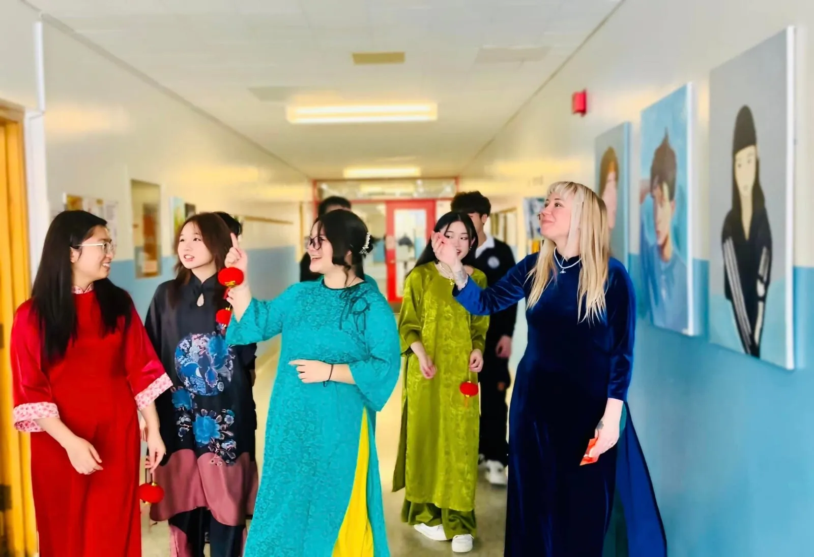

Hoàng Minh Hà
Giám đốc Học thuật Tiếng Việt · PEI
Cô Hanna dẫn dắt các lớp tiếng Việt cộng đồng của CVCEC tại Đảo Hoàng tử Edward và công tác xây dựng chương trình tiếng Việt.

Trường Tiếng Việt Của Em · My Vietnamese School
Một phần trong nhịp cầu Canada – Việt Nam của CVCEC: ngôi trường miễn phí cho con em các gia đình Việt ở nước ngoài, và cho tất cả những ai muốn hiểu Việt Nam qua tiếng Việt.
11
góc học trực tuyến miễn phí
436
bài học và hoạt động có ghi nhận tiến độ
2,600
tệp âm thanh, cùng hơn 80 video
31
em tại Chi nhánh PEI
5
giáo viên tại Ontario, PEI, Manitoba và Phần Lan
$0
chi phí cho gia đình
Dành cho ai
For children of Vietnamese families abroad
Nhiều em nhỏ gốc Việt ở Canada hiểu tiếng Việt ở nhà nhưng hiếm khi dùng ở nơi khác. Trường mang đến cho các em một lộ trình học rõ ràng, từ bảng chữ cái đến đọc và viết, để các em trò chuyện được với ông bà, đọc được truyện và tự hào về nguồn cội gia đình.
For international friends
Bạn không cần là người gốc Việt để học ở đây. Bạn học người Canada, thầy cô, đối tác và bạn bè đều được chào đón, bắt đầu từ tiếng Việt rồi khám phá Việt Nam qua truyện cổ tích, ca dao tục ngữ, bài hát và bản đồ tương tác.
Học như thế nào
Người học có thể tự học tại vietclass.cvcec.org, hoặc tham gia lớp cộng đồng do giáo viên CVCEC phụ trách. Lớp trực tiếp, lớp trực tuyến và nền tảng miễn phí đều theo cùng một lộ trình, do Giám đốc Học thuật Tiếng Việt, cô Hanna, chuẩn hoá.

11 góc học tại vietclass.cvcec.org. Ra mắt tại Toronto tháng 7/2026; gom về một cổng chung từ tháng 11/2026.
436bài học
Cô giáo ở Manitoba phụ trách các buổi trực tuyến học chung với các bạn PEI.
3buổi/tuần
Lớp trẻ em và Tủ sách tiếng Việt từ tháng 4/2026; lớp thứ Bảy tại thư viện North York Central từ tháng 12/2026.
6 + 10trẻ em + người lớn
Từ tháng 12/2026, câu lạc bộ dành cho người thuộc các cộng đồng khác muốn học tiếng Việt.
Mới12/2026
Số liệu tính đến tháng 11/2026. Muốn hỏi về việc tham gia lớp, xin email contact@cvcec.org.
Góc học miễn phí · Làng học tập Trâu Con
Mọi thứ đều có tại vietclass.cvcec.org, với bạn Trâu Con dẫn đường. Người học từ 15 tuổi có thể theo lộ trình đối chiếu với Khung năng lực tiếng Việt 6 bậc dùng cho người nước ngoài. Ngoài ra còn có phòng triển lãm “Em học tiếng Việt” và 12 gợi ý hoạt động cho giáo viên đứng lớp.
| Góc học | Nội dung | Quy mô |
|---|---|---|
| Luyện nói – Luyện thanh | Bảng âm, sáu thanh có đường cao độ, luyện từ và câu | 24 chủ đề |
| Tiếng Việt cơ bản | Âm, vần và tập đọc | 80 bài + 12 bài ôn tập |
| Văn hoá truyền thống | Lễ Tết, gia đình và đạo hiếu | Bài 81–145 |
| Vui học tiếng Việt | Bản tương tác của bộ sách, số hoá có phép của nhà xuất bản | 40 bài, gần 1.950 đoạn âm thanh |
| Ngữ pháp tiếng Việt | Từ, cụm từ, câu và hội thoại, có chấm bài viết | 37 bài |
| Khám phá Việt Nam | Hành trình trên bản đồ từ địa đầu Tổ quốc đến Đất Mũi Cà Mau | 31 trạm, 31 phim ngắn |
| Hát cùng Trâu Con | Đồng dao, dân ca, hát ru kèm trò chơi dân gian | 24 bài |
| Kho báu lời ông bà | Thành ngữ, tục ngữ và ca dao | 60 câu, 7 trò chơi |
| Truyện cổ tích | Sách lật, xếp tranh kể lại và viết suy ngẫm | 30 truyện |
| Bài học cuộc sống | Thơ dạy trẻ kinh điển do cô Hanna giảng | 18 khổ thơ, 32 bài, 50 video |
| Về Nhà Em | Học tiếng Việt qua ẩm thực Việt | 8 món |
Số liệu tính đến 17/11/2026.
Đội ngũ giáo viên
Giám đốc Học thuật Tiếng Việt · PEI
Cô Hanna dẫn dắt các lớp tiếng Việt cộng đồng của CVCEC tại Đảo Hoàng tử Edward và công tác xây dựng chương trình tiếng Việt.

Giáo viên Tiếng Việt · PEI
Giúp các em ở Đảo Hoàng tử Edward đọc, viết và nói tiếng Việt tự tin.

Giáo viên Tiếng Việt · Manitoba
Phụ trách lớp trực tuyến tại Manitoba, học cùng các bạn ở Đảo Hoàng tử Edward.
Câu hỏi
Không. Trường trực tuyến, các góc học và lớp cộng đồng đều miễn phí cho gia đình.
Hãy bắt đầu với lộ trình bài học tại vietclass.cvcec.org. Bài học đi theo chương trình phổ thông của Việt Nam từng bước một, nên các em có thể bắt đầu ở trình độ phù hợp, và phụ huynh có thể đồng hành cùng tài liệu hướng dẫn phụ huynh.
Có. Trường mở cho người học tiếng Việt như ngôn ngữ thứ hai. Truyện cổ tích, ca dao tục ngữ, bài hát và bản đồ Khám phá Việt Nam là điểm khởi đầu rất tốt.
Chúng tôi rất vui được trao đổi với trường học, hội đồng trường học và hội nhóm cộng đồng. Email contact@cvcec.org để bắt đầu.
Phụ huynh, thầy cô và tình nguyện viên là những người giữ cho ngôi trường hoạt động. Chúng tôi rất mong được lắng nghe bạn.